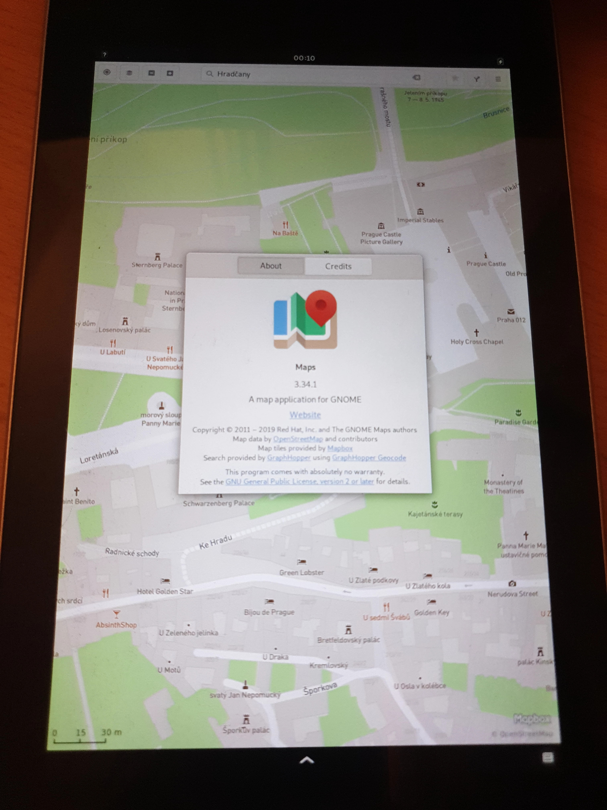

Google Nexus 7 2012 (asus-grouper)
|
 Google Nexus 7 | |
| Manufacturer | ASUS |
|---|---|
| Name | Nexus 7 (2012) |
| Codename | asus-grouper |
| Released | 2012 |
| Category | testing |
| Original software | Android |
| Original version | 4.1.2 on Linux 3.0 |
| Hardware | |
| Chipset | Nvidia Tegra 3 (T30L) |
| CPU | Quad-core 1.2 GHz Cortex-A9 |
| GPU | ULP GeForce |
| Display | 800x1280 IPS |
| Storage | 8/16/32 GB |
| Memory | 1 GB |
| Architecture | armv7 |
| Unixbench Whet/Dhry score | 1364.3 |
{kind=link}
| USB Networking |
Works
|
|---|---|
| Flashing |
Works
|
| Touchscreen |
Works
|
| Display |
Works
|
| WiFi |
Works
|
| FDE |
Works
|
| Mainline |
Works
|
| Battery |
Works
|
| 3D Acceleration |
Partial
|
| Audio |
Works
|
| Bluetooth |
Works
|
| Camera | |
| GPS |
Partial
|
| Mobile data |
Unavailable
|
| SMS |
Unavailable
|
| Calls |
Unavailable
|
| USB OTG |
Works
|
| NFC |
Works
|
| Accelerometer |
Works
|
|---|---|
| Magnetometer |
Works
|
| Ambient Light |
Works
|
| Proximity |
Unavailable
|
| Hall Effect |
Works
|
| Barometer | |
| Power Sensor | |
| Camera Flash | |
|---|---|
| Keyboard | |
| Touchpad | |
| USB-A | |
| HDMI/DP | |
| Ir TX |
Unavailable
|
| Ir RX | |
| Stylus | |
| Haptics | |
| Ethernet | |
| FOSS bootloader |
Works
|
| Primary Bootloader |
Works
|
|---|---|
| Secondary Bootloader |
Works
|
| Mainline |
Works
|
| Internal Storage |
Works
|
| SD card |
Unavailable
|
| USB Host |
Broken
|
| USB Peripheral |
Works
|
| Display |
Works
|
| Keyboard |
Unavailable
|
| Buttons |
Works
|
|
This device is based on the Tegra 3. See the SoC page for common tips, guides and troubleshooting steps |
This page documents the status of mainline Linux on the Nexus 7. This document should cover all tablets from first generation (codenamed grouper and tilapia).
Currently all supported features should work as they're supposed to, no known bugs except few not-yet supported features (3D, GPS, cameras and modem).
Hardware revisions
- grouper rev. PM269 - without GSM (older, less frequent)
- grouper rev. E1565 - without GSM (modern)
- tilapia rev. E1565 - with GSM
Do I have grouper or tilapia?
TWRP (adb shell) $ grep androidboot.baseband=unknown /proc/cmdline && echo grouper || echo tilapia
Which hardware revision of grouper do I have?
TWRP (adb shell) $ find /sys/devices/ | grep -c max776 && echo You have E1565
TWRP (adb shell) $ find /sys/devices/ | grep -c tps6591 && echo You have PM269
Flashing
When flashing (flashing the kernel or rootfs) the target device must be in flash mode.
How to enter flash mode
- Connect a USB cable
- Power the device off
- Hold Power + Volume Down
-
fastbootshould work when the green android appears on the screen
Installation process
This consists of two parts: preparing the kernel, and then flashing the rootfs.
Preparing rootfs
Preparing rootfs (on the your computer ready to be converted to an image and flashed to the target device) and flashing kernel:
pmbootstrap init
pmbootstrap install --filesystem f2fs
pmbootstrap flasher flash_kernel
Flashing rootfs
To flash the rootfs the target device must have a partition large enough to contain the image. The Nexus 7 may have multiple partitions, but of note it has a 650 MB system partition and a >4GB USERDATA partition (at least by default it does). If your rootfs image is larger than 650 MB (quite likely - more on this below) then it cannot fit on the system partition. Either you have to resize your partitions (this is untested and you're on your own if you choose this route), or you can flash the rootfs to the USERDATA partition instead (recommended).
Determining rootfs image size
This command puts the images-to-flash in the /tmp/postmarketOS-export diretory and then shows the file sizes (in a human-readable format).
1 (computer) $ pmbootstrap export
2 (computer) $ du -hL /tmp/postmarketOS-export/*
3 (computer) $ adb shell
The route partition is named asus-grouper. If this is larger than 650 M it cannot be flashed to the system partition.
Flashing to USERDATA partition
NOTE: This may change size of your data partition. You can fix it by resizing partition in TWRP before flashing Android. You should proceed very carefully here.
When rootfs is larger than 650 MB you can choose to flash it to the system partition or USERDATA partition (which is on Nexus always > 4 GB). This guide is intended will help you flash rootfs onto USERDATA partition.
Prerequisites: Official TWRP, at least version 3.3.1-0, binaries are here for grouper or tilapia.
First, start TWRP (hold power + volume up) and then continue with these instructions
1 (computer) $ pmbootstrap export
2 (computer) $ adb shell
3 (twrp) $ df # look for the data partition. should be something like /dev/block/mmcblk0p9 or p10 with /data next to it
4 (twrp) $ umount /dev/block/mmcblk0p__ <- fill partition number
5 (twrp) $ umount /dev/block/mmcblk0p__ <- fill partition number # again, it can be mounted as /sdcard and as /data
6 (computer again) $ adb push /tmp/postmarketOS-export/asus-grouper.img /dev/block/mmcblk0p__ <- fill partition number
- grouper has likely data on /dev/block/mmcblk0p9 but make sure!
- tilapia has likely data on /dev/block/mmcblk0p10 but make sure!
it's probably because tilapia has additional modem partition. If you're not sure, come to our Matrix channel and ask :)
Flashing to system partition (alternative rootfs flashing)
In case that your rootfs is smaller than 650 MB, you can also use this simple way to flash it:
pmbootstrap flasher flash_rootfs
Once the rootfs has been flashed (this may take a long time - the Nexus 7's internal storage is slow even by early 2010s standards), you can reboot the device into postmarketos.
If your device starts up and then cuts to an empty screen (as mine did), it may still have booted into postmarketos but something has gone wrong to prevent the display outputting. In this scenario the black-screen-device still connects to a computer over USB, so you can still log in to the device over SSH. For more info see USB Network. It may then be possible to resolve the screen issues (need to explore this more).
Hardware status (mainline)
There is multiple hardware revisions, so this status may not apply to all of them. This status apply for tilapia (Bach revision).
| Status | Hardware | Info |
|---|---|---|
| Y | Booting | ... but when is kernel larger than approx 4MB, initfs must be packed directly inside kernel (not into boot.img as usual), otherwise kernel won't boot. Older downstream kernels was smaller, so no issue there. |
| Y | Touchscreen | Works. |
| Y | USB & USB OTG | Works. |
| Y | SDHCI | Works. |
| Y | NFC | wired, not tested yet. Please update if it'll work for you. |
| P | GPS | Broadcom BCM4751 GPS is unsupported by the kernel and gpsd. Pangelo works on it. |
| Y | WiFi and Bluetooth | Wi-Fi works (best with IWD daemon: apk add iwd; rc-update del wpa_supplicant; rc-update add iwd; and HOWTO), Bluetooth does work as well (tested with BT 4.2 and 5.0 devices). |
| Y | GPIO keys | There is 3 keys on GPIO: Power, Volume up, Volume down. |
| Y | Battery and Charger | Battery status and charging works as expected. |
| Y | Sound | Works, ALSA UCM configs are included into alsa-ucm-conf package |
| Y | Temperature sensor | temperature sensor works |
| Y | Proximity sensor | (tilapia only) Disabled, but works (boolean state, on/off). Would be nice to have this driver work with IIO framework (TODO) |
| Y | Light sensor | Driver Dyna-Image AL3010. Brightness regulation works, install iio-sensor-proxy . It's slightly oversensitive. |
| N | Front camera | |
| P | 3D support | See Nvidia_Tegra_2_(tegra20)#Graphics |
| N | Modem | (tilapia only) contribution welcome, no work done yet. |
User Interfaces
Multiple, but due to not yet implemented HW acceleration, some of them are currently unavailable (like Phosh)
Recommended interfaces:
- Phosh: Purism Librem 5 compositor and GNOME based environment, needs performance optimization, but works.
- Xfce4: GTK-based desktop environment aiming to be fast and lightweight. Follow the guide at https://wiki.postmarketos.org/wiki/XFCE4 for adjustments.
Development Notes
Bootloader
- There is some progress on u-boot for Tegra devices. Check u-boot repository
- The default images for android provided by google have the bootloader broken, meaning it can't be flashed. It does not seem to affect the install process of postmarketOS, but is something to take into account. If you need a working bootloader image version 4.23 can be found [here], or can be 4.18 can be grabbed from the factory images for KitKat
Kernel
Currently used mainline kernel:
- Grate kernel, where tegra development ongoing. It does follow official linux-next branch.
References to older kernels:
- Old Android kernels: LineageOS kernel sources Unlegacy kernel sources
- Ubuntu Nexus 7 Kernel wiki (old, last updated 2012)
Graphics
- The touchscreen input device is named
elan-touchscreen. - (legacy) CONFIG_VT had to be enabled for graphics to work. In menuconfig this is located under Device Drivers -> Character devices -> Virtual terminal.
- (legacy)
/sys/class/graphics/fb0/mode is empty on boot, it must have U:800x1280p-0. This uses the same initfs hook as many other devices.Update: Seems to be correctly set now - (legacy) weston with fbdev-backend.so uses pixman-type=3 (PIXMAN_TYPE_ABGR), which now does not require configuration.
Wifi
- There's a proper firmware subpackage now, wifi device should work out-of-the box.
- "Desktop" Linux firmware are outdated. Check here for latest one.
- To connect follow the instructions on this page.
- (legacy)It is possible to manually get wifi working by manually copying fw_bcmdhd.bin and nvram.txt to their kernel-specified locations and configuring
/etc/network/interfaces. At this point, running/etc/init.d/networking restart, gave an error about being unable to get a MAC address. After restarting the device to find that wifi Just Worked™, it was possible to successfully scan for wireless networks and establish a connection to secured wireless APs.
Pending Issues
- pmbootstrap#60: Use the system and userdata partition on Android with LVM
-
pmbootstrap#1422: The
systempartition is too small to hold rootfs images over 650Mb (e.g. Plasma Mobile is about 1.1Gb). Flashing touserdatapartition fails. - pmaports#201: With legacy kernel, device seems to reboot spontaneously under heavy load. For better experience, please use mainline kernel.
Community Info
Users owning this device
- 00p513 (Notes: Have new one!)
- Antonok
- Baonks81 (Notes: Hw rev.E1565 no GSM - 6 tablets)
- Bczeman
- Blitztide
- BogdanTheGeek (Notes: E1565 no GSM)
- Clamor
- Ecloud
- Eloy
- GloomyJD (Notes: Works, very weak battery)
- Gull Code (Notes: OK,daily use with XFCE4. See my profile if you want to have automatic rotation and light with Asus grouper sensor daemon or jump to https://gitlab.com/gullradriel/asus-grouper-nexus-7-sensor-daemon)
- Hilledkinged (Notes: Revived from corrupt bootloader)
- Isot42 (Notes: OK PM269 version)
- Joshaspinall (Notes: PM269)
- LongnoseRob (Notes: pmOS (edge) with Grate kernel and U-Boot, UI: mate)
- Maff (Notes: Multiple)
- Misopog (Notes: Like new, unlocked, stock)
- Nergzd723 (Notes: emmc dead, bct partition intact, possible to fusee-gelee)
- Okias (Notes: OK, HW rev.E1565 (asus-tilapia))
- Pangelo (Notes: original grouper (non-GSM) model)
- Pojntfx
- Progressnoize (Notes: Screen broken)
- Roboe (Notes: (borrowed) variant: grouper, version-hardware: ER3; HW rev. E1565; running pmOS edge as a smart display)
- Roboe (Notes: (borrowed) variant: grouper; unknown HW rev.; broken battery)
- Russanandres (Notes: SailfishOS 1)
- Segfault (Notes: x3 - 2 16GB and 1 32GB)
- The Arjdroid (Notes: Impressive! Works with phosh & xfce4, but not daily driveable yet. It needs 3D acceleration for smoother UI, & firefox fix crashes. Great for running it as a no display server like a raspberry pi. Running with xfce4 can make it usable as a smart display like a calendar or something.)
Maintainers
Fun Fact
grouper was the first tablet to run postmarketOS!
See also
- dmesg logs from various tegra devices https://paste.sr.ht/%7Eokias